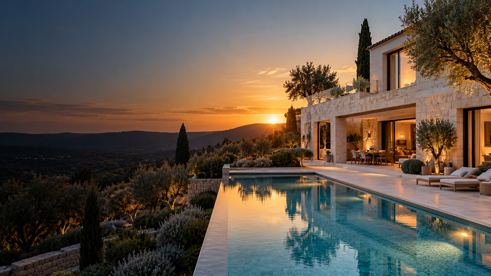

Votre espace ABK
Votre projet,
à portée de main.
L’espace client est en préparation. La connexion sécurisée n’est pas encore activée. Pour le suivi de votre chantier, contactez directement l’équipe ABK.
Vous souhaitez démarrer un projet ? Retrouvez les demandes de devis dans les pages de nos expertises.